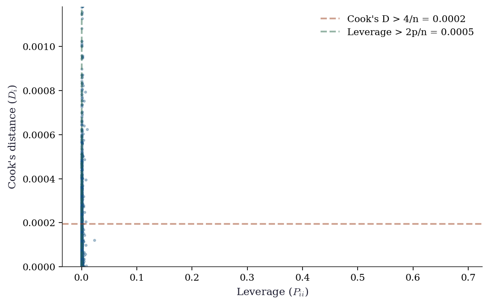
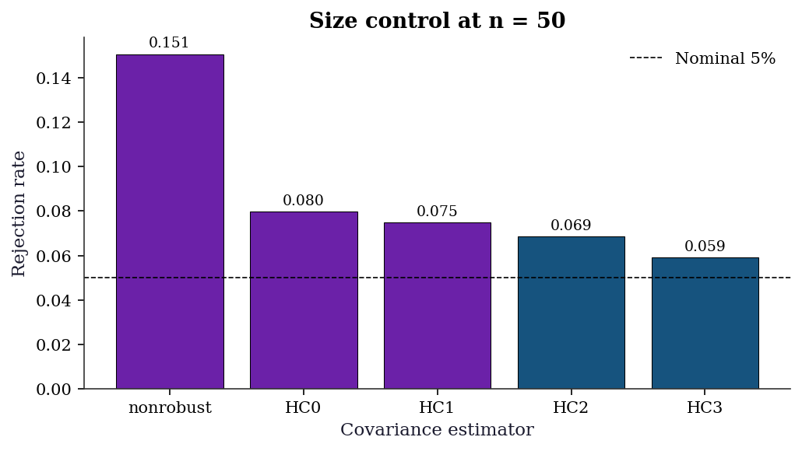
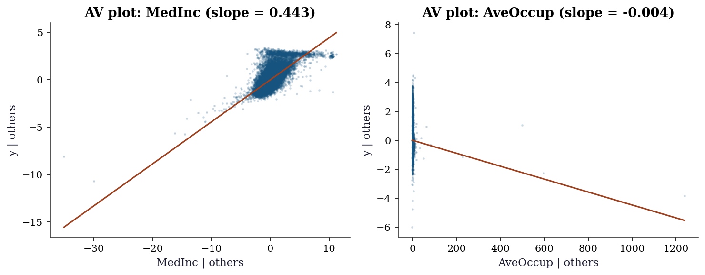
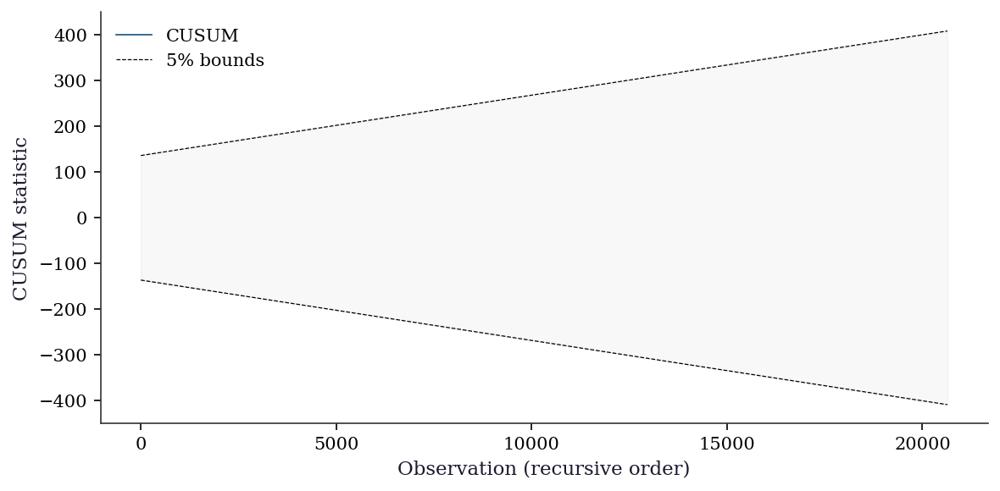
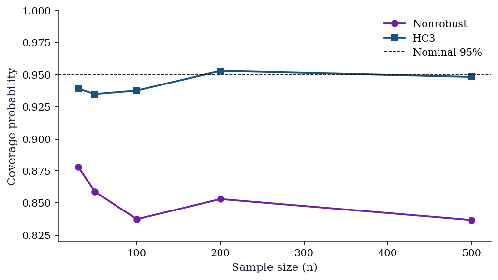
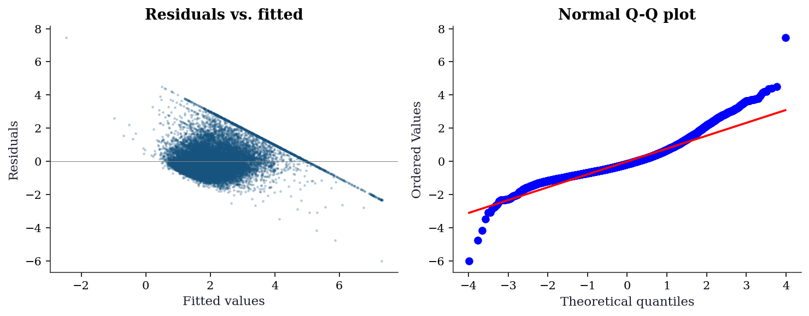
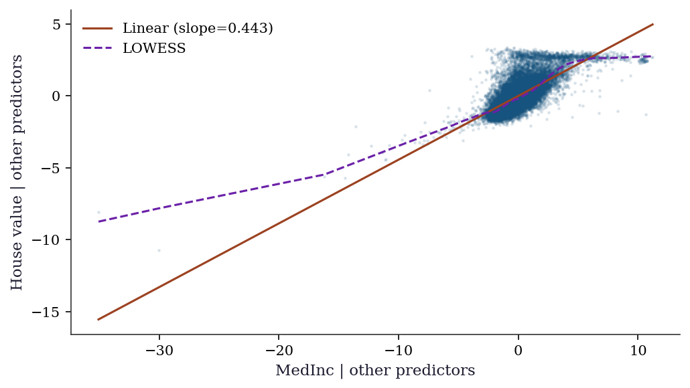

import numpy as np
import matplotlib.pyplot as plt
import pandas as pd
import statsmodels.api as sm
from statsmodels.stats.diagnostic import (
het_breuschpagan, het_white, linear_reset, acorr_ljungbox,
)
from statsmodels.stats.outliers_influence import (
OLSInfluence, variance_inflation_factor,
)
from scipy import stats
from sklearn.datasets import fetch_california_housing
plt.style.use('assets/book.mplstyle')
rng = np.random.default_rng(42)11 Linear Regression Under Misspecification
11.0.1 Notation for this chapter
| Symbol | Meaning | statsmodels |
|---|---|---|
| \(\mathbf{y} = \mathbf{X}\boldsymbol{\beta} + \boldsymbol{\varepsilon}\) | Linear model | OLS(endog, exog) |
| \(\hat{\boldsymbol{\beta}} = (\mathbf{X}^\top\mathbf{X})^{-1}\mathbf{X}^\top\mathbf{y}\) | OLS estimate | .params |
| \(\hat{\boldsymbol{\varepsilon}} = \mathbf{y} - \mathbf{X}\hat{\boldsymbol{\beta}}\) | Residuals | .resid |
| \(\mathbf{P} = \mathbf{X}(\mathbf{X}^\top\mathbf{X})^{-1}\mathbf{X}^\top\) | Hat matrix | OLSInfluence.hat_matrix_diag |
| \(P_{ii}\) | Leverage of observation \(i\) | |
| \(D_i\) | Cook’s distance | OLSInfluence.cooks_distance |
| \(\text{DFBETAS}_{ij}\) | Influence of obs \(i\) on coefficient \(j\) | OLSInfluence.dfbetas |
| \(\text{VIF}_j\) | Variance inflation factor for predictor \(j\) | variance_inflation_factor |
| \(\boldsymbol{\Omega}\) | Error covariance matrix \(\text{diag}(\sigma_1^2, \ldots, \sigma_n^2)\) | |
| \(\hat{\Gamma}_j\) | Autocovariance at lag \(j\): \(n^{-1}\sum_t \hat{e}_t \hat{e}_{t-j} \mathbf{x}_t\mathbf{x}_{t-j}^\top\) | |
| \(L\) | Bandwidth (number of lags) for HAC estimator | maxlags in cov_type='HAC' |
| \(G\) | Number of clusters | |
| \(g\) | Cluster index, \(g = 1, \ldots, G\) | groups in cov_type='cluster' |
11.1 Motivation
In Chapter 1, we showed that scikit-learn’s Ridge gives you coefficients but no standard errors, no \(p\)-values, no diagnostics. Statsmodels’ OLS gives you all of these — but they are only valid when the model’s assumptions hold. This chapter is about what happens when they don’t, and what statsmodels provides to detect and fix the problems.
The Gauss–Markov assumptions for OLS are:
- Linearity: \(\mathbb{E}[y \mid \mathbf{x}] = \mathbf{x}^\top\boldsymbol{\beta}\)
- Exogeneity: \(\mathbb{E}[\varepsilon \mid \mathbf{X}] = \mathbf{0}\)
- Homoscedasticity: \(\text{Var}(\varepsilon_i \mid \mathbf{X}) = \sigma^2\) (constant)
- No autocorrelation: \(\text{Cov}(\varepsilon_i, \varepsilon_j \mid \mathbf{X}) = 0\) for \(i \neq j\)
- No perfect multicollinearity: \(\text{rank}(\mathbf{X}) = p\)
Each assumption has a diagnostic test in statsmodels and a fix when it fails. This chapter walks through all five, showing what breaks, how to detect it, and how to repair inference.
11.2 Mathematical Foundation
11.2.1 What OLS actually estimates
Even when the model is wrong (the true conditional expectation is not linear), OLS estimates the best linear predictor:
\[ \boldsymbol{\beta}^* = \arg\min_\mathbf{b} \mathbb{E}[(y - \mathbf{x}^\top\mathbf{b})^2]. \]
This is the population projection coefficient. OLS is consistent for \(\boldsymbol{\beta}^*\) regardless of whether the model is correctly specified. The question is not “does OLS work?” but “what are you estimating, and are your standard errors correct?”
11.2.2 The Gauss–Markov theorem (intuition)
Under assumptions 1–5, OLS is the Best Linear Unbiased Estimator (BLUE): no other linear unbiased estimator has smaller variance.
Why this matters for API design: This is why statsmodels’ default cov_type='nonrobust' assumes homoscedasticity. Under Gauss–Markov, the model-based variance \(\hat{\sigma}^2(\mathbf{X}^\top\mathbf{X})^{-1}\) is correct and efficient. The robust alternatives (HC0–HC3) sacrifice some efficiency for validity under misspecification.
11.2.3 The sandwich variance (recap from Ch. 10)
When homoscedasticity fails, the model-based SE is wrong. The sandwich estimator (HC0) from Equation 14.9 is valid under heteroscedasticity:
\[ \hat{\mathbf{V}}_{\text{HC0}} = (\mathbf{X}^\top\mathbf{X})^{-1} \left(\sum_i \hat{e}_i^2 \mathbf{x}_i\mathbf{x}_i^\top\right) (\mathbf{X}^\top\mathbf{X})^{-1}. \]
The HC1–HC3 variants apply corrections for small samples:
| Variant | Weight on \(\hat{e}_i^2\) | Best for |
|---|---|---|
| HC0 | 1 | Large \(n\) |
| HC1 | \(n/(n-p)\) | Default adjustment |
| HC2 | \(1/(1-P_{ii})\) | Reduces leverage bias |
| HC3 | \(1/(1-P_{ii})^2\) | Best finite-sample properties |
HC3 downweights high-leverage observations most aggressively and generally has the best size control in small samples.
11.2.4 Why the sandwich works: a derivation
The sandwich formula is not handed down by fiat. It follows from one algebraic identity. Start from the OLS estimator:
\[ \hat{\boldsymbol{\beta}} - \boldsymbol{\beta} = (\mathbf{X}^\top\mathbf{X})^{-1}\mathbf{X}^\top\boldsymbol{\varepsilon}. \]
The variance of \(\hat{\boldsymbol{\beta}}\) is therefore:
\[ \text{Var}(\hat{\boldsymbol{\beta}} \mid \mathbf{X}) = (\mathbf{X}^\top\mathbf{X})^{-1} \mathbf{X}^\top\,\text{Var}(\boldsymbol{\varepsilon} \mid \mathbf{X})\, \mathbf{X}\, (\mathbf{X}^\top\mathbf{X})^{-1}. \tag{11.1}\]
Under homoscedasticity, \(\text{Var}(\boldsymbol{\varepsilon} \mid \mathbf{X}) = \sigma^2 \mathbf{I}\), so the middle collapses: \(\sigma^2 \mathbf{X}^\top\mathbf{X}\), and we recover the textbook formula \(\sigma^2(\mathbf{X}^\top\mathbf{X})^{-1}\). Under heteroscedasticity, \(\text{Var}(\boldsymbol{\varepsilon} \mid \mathbf{X}) = \boldsymbol{\Omega} = \text{diag}(\sigma_1^2, \ldots, \sigma_n^2)\), and no simplification is possible. The three factors give the sandwich its name:
- Bread: \((\mathbf{X}^\top\mathbf{X})^{-1}\)
- Meat: \(\mathbf{X}^\top\boldsymbol{\Omega}\mathbf{X} = \sum_{i=1}^n \sigma_i^2\, \mathbf{x}_i\mathbf{x}_i^\top\)
- Bread: \((\mathbf{X}^\top\mathbf{X})^{-1}\)
We don’t know \(\sigma_i^2\), so HC0 plugs in \(\hat{e}_i^2\). This is consistent because \(\hat{e}_i^2 \xrightarrow{p} \sigma_i^2\) for each \(i\) as \(n \to \infty\), so the estimated meat converges to the population meat.
11.2.5 HAC: what autocorrelation does to the meat
When errors are autocorrelated — common in time-series cross-sections or spatially ordered data — the covariance matrix \(\text{Var}(\boldsymbol{\varepsilon})\) is no longer diagonal. Off-diagonal terms \(\text{Cov}(\varepsilon_i, \varepsilon_j) \neq 0\) mean the meat becomes:
\[ \mathbf{X}^\top\boldsymbol{\Omega}\mathbf{X} = \sum_{i=1}^n \sum_{j=1}^n \sigma_{ij}\, \mathbf{x}_i\mathbf{x}_j^\top. \]
Estimating all \(n^2\) covariances is hopeless (\(n\) parameters from \(n\) observations). The Newey–West HAC estimator assumes that \(\text{Cov}(\varepsilon_t, \varepsilon_{t-j})\) is negligible beyond lag \(L\) and downweights intermediate lags with a Bartlett kernel:
\[ \hat{\mathbf{S}} = \hat{\Gamma}_0 + \sum_{j=1}^{L} w_j\bigl(\hat{\Gamma}_j + \hat{\Gamma}_j^\top\bigr), \qquad w_j = 1 - \frac{j}{L+1}, \tag{11.2}\]
where \(\hat{\Gamma}_j = n^{-1}\sum_{t=j+1}^n \hat{e}_t\,\hat{e}_{t-j}\,\mathbf{x}_t\,\mathbf{x}_{t-j}^\top\). The HAC variance is then \((\mathbf{X}^\top\mathbf{X})^{-1}\, n\,\hat{\mathbf{S}}\,(\mathbf{X}^\top\mathbf{X})^{-1}\).
The Bartlett kernel linearly downweights higher lags, ensuring the estimated covariance matrix is positive semi-definite — a property that truncation (\(w_j = 1\) for \(j \le L\), \(0\) otherwise) does not guarantee. The bandwidth \(L\) controls the bias-variance trade-off: too small misses genuine autocorrelation, too large inflates SEs by estimating noise.
11.2.6 Cluster-robust standard errors
When observations are grouped into \(G\) clusters (students within schools, employees within firms, counties within states), errors are independent across clusters but arbitrarily correlated within each cluster. The meat becomes a sum over clusters:
\[ \hat{\mathbf{M}}_{\text{cluster}} = \sum_{g=1}^{G} \mathbf{X}_g^\top\hat{\boldsymbol{e}}_g\, \hat{\boldsymbol{e}}_g^\top\mathbf{X}_g, \tag{11.3}\]
where \(\mathbf{X}_g\) and \(\hat{\boldsymbol{e}}_g\) are the rows of \(\mathbf{X}\) and the residuals belonging to cluster \(g\). The sandwich is then \((\mathbf{X}^\top\mathbf{X})^{-1}\hat{\mathbf{M}}_{\text{cluster}} (\mathbf{X}^\top\mathbf{X})^{-1}\), with a small-sample correction factor \(G/(G-1) \cdot (n-1)/(n-p)\) analogous to HC1.
The few-clusters problem. Cluster-robust SEs are consistent as \(G \to \infty\), not as \(n \to \infty\) with fixed \(G\). With fewer than about 50 clusters, the SEs are biased downward (too small), over-rejecting the null. Cameron, Gelbach, and Miller (2008) recommend the wild cluster bootstrap when \(G < 50\). We demonstrate this bias in the simulation below.
11.2.7 Influence functions and the connection to Chapter 12
Cook’s distance measures how much the entire coefficient vector moves when observation \(i\) is deleted. It can be computed without refitting via the Sherman–Morrison–Woodbury formula:
\[ D_i = \frac{(\hat{\boldsymbol{\beta}} - \hat{\boldsymbol{\beta}}_{(i)})^\top (\mathbf{X}^\top\mathbf{X}) (\hat{\boldsymbol{\beta}} - \hat{\boldsymbol{\beta}}_{(i)})}{p\,\hat{\sigma}^2} = \frac{\hat{e}_i^2}{p\,\hat{\sigma}^2} \cdot \frac{P_{ii}}{(1 - P_{ii})^2}. \]
The second equality is the one-step approximation: instead of refitting OLS on \(n-1\) observations, we use the leverage \(P_{ii}\) to compute the leave-one-out change analytically. This is exactly the empirical influence function of \(\hat{\boldsymbol{\beta}}\) evaluated at observation \(i\).
DFBETAS decomposes this influence coefficient-by-coefficient:
\[ \text{DFBETAS}_{ij} = \frac{\hat{\beta}_j - \hat{\beta}_{j(i)}} {\hat{\sigma}_{(i)}\sqrt{[(\mathbf{X}^\top\mathbf{X})^{-1}]_{jj}}}. \]
An observation with large \(|D_i|\) inflates or deflates all coefficients; an observation with large \(|\text{DFBETAS}_{ij}|\) for a specific \(j\) targets that coefficient. Chapter 12 develops the influence function in its full generality for M-estimators, where Cook’s D is a special case.
11.3 The Algorithm
OLS is not iterative: \(\hat{\boldsymbol{\beta}} = (\mathbf{X}^\top\mathbf{X})^{-1}\mathbf{X}^\top\mathbf{y}\). But the diagnostics that follow are algorithms in their own right.
11.4 Statistical Properties
Under correct specification: OLS is BLUE. Standard errors are valid. \(t\)-tests and \(F\)-tests have exact distributions under normality, approximate \(\chi^2\) distributions asymptotically.
Under heteroscedasticity: OLS is still consistent and unbiased, but no longer efficient. Model-based SEs are wrong (usually too small, leading to over-rejection). HC-robust SEs fix inference at the cost of some power.
Under autocorrelation: OLS is still consistent but SEs are wrong in both directions. HAC (Newey–West) SEs account for serial correlation using a kernel estimator.
Under endogeneity: OLS is inconsistent — it converges to the wrong \(\boldsymbol{\beta}^*\). No variance correction helps. The fix is instrumental variables (Chapter 20).
11.5 Statsmodels Implementation
11.5.1 The full OLS workflow
# California Housing data
housing = fetch_california_housing(as_frame=True)
X = housing.data[['MedInc', 'HouseAge', 'AveRooms', 'AveOccup']]
y = housing.target
X_sm = sm.add_constant(X)
# Fit with robust SEs
ols = sm.OLS(y, X_sm).fit(cov_type='HC1')
print(ols.summary().tables[1])==============================================================================
coef std err z P>|z| [0.025 0.975]
------------------------------------------------------------------------------
const 0.0314 0.050 0.622 0.534 -0.068 0.130
MedInc 0.4433 0.006 76.125 0.000 0.432 0.455
HouseAge 0.0169 0.001 31.268 0.000 0.016 0.018
AveRooms -0.0273 0.010 -2.671 0.008 -0.047 -0.007
AveOccup -0.0045 0.001 -3.714 0.000 -0.007 -0.002
==============================================================================11.5.2 Heteroscedasticity tests
# Breusch-Pagan test
ols_nr = sm.OLS(y, X_sm).fit()
bp_stat, bp_pval, _, _ = het_breuschpagan(ols_nr.resid, X_sm)
print(f"Breusch-Pagan: stat={bp_stat:.2f}, p={bp_pval:.4e}")
# White's test (more general — allows nonlinear heteroscedasticity)
w_stat, w_pval, _, _ = het_white(ols_nr.resid, X_sm)
print(f"White: stat={w_stat:.2f}, p={w_pval:.4e}")
if bp_pval < 0.05:
print("\nHeteroscedasticity detected → use HC1+ standard errors.")Breusch-Pagan: stat=644.69, p=3.2840e-138
White: stat=2246.39, p=0.0000e+00
Heteroscedasticity detected → use HC1+ standard errors.11.5.3 Specification test (Ramsey RESET)
# RESET: test whether adding y_hat^2, y_hat^3 improves the model
# (detects nonlinearity and omitted variables)
reset_result = linear_reset(ols_nr, power=3, use_f=True)
reset_stat, reset_pval = reset_result.fvalue, reset_result.pvalue
print(f"Ramsey RESET: F={reset_stat:.2f}, p={reset_pval:.4e}")
if reset_pval < 0.05:
print("Specification error detected — model may be nonlinear "
"or missing variables.")Ramsey RESET: F=627.72, p=2.2634e-265
Specification error detected — model may be nonlinear or missing variables.11.5.4 Multicollinearity (VIF)
# VIF > 10 suggests problematic multicollinearity
print(f"{'Variable':<12} {'VIF':>8}")
for j in range(1, X_sm.shape[1]):
vif = variance_inflation_factor(X_sm.values, j)
print(f"{X.columns[j-1]:<12} {vif:>8.2f}")Variable VIF
MedInc 1.13
HouseAge 1.03
AveRooms 1.14
AveOccup 1.0011.5.5 Influence diagnostics
influence = OLSInfluence(ols_nr)
leverage = influence.hat_matrix_diag
cooks_d = influence.cooks_distance[0]
n, p = X_sm.shape
fig, ax = plt.subplots()
ax.scatter(leverage, cooks_d, s=5, alpha=0.3)
ax.axhline(4/n, color="C1", linestyle="--", alpha=0.5,
label=f"Cook's D > 4/n = {4/n:.4f}")
ax.axvline(2*p/n, color="C2", linestyle="--", alpha=0.5,
label=f"Leverage > 2p/n = {2*p/n:.4f}")
ax.set_xlabel("Leverage ($P_{ii}$)")
ax.set_ylabel("Cook's distance ($D_i$)")
ax.legend()
ax.set_ylim(0, np.percentile(cooks_d, 99.5))
plt.show()
n_high_lev = np.sum(leverage > 2*p/n)
n_high_cook = np.sum(cooks_d > 4/n)
print(f"High leverage: {n_high_lev} ({n_high_lev/n:.1%})")
print(f"High Cook's D: {n_high_cook} ({n_high_cook/n:.1%})")
High leverage: 591 (2.9%)
High Cook's D: 713 (3.5%)11.5.6 WLS: weighted least squares
# When you know (or estimate) the error variance structure
# WLS weights = 1/variance
# Estimate variance as function of MedInc
# (higher income areas have more price variability)
residuals_sq = ols_nr.resid**2
log_var_model = sm.OLS(np.log(residuals_sq + 1e-8),
sm.add_constant(X['MedInc'])).fit()
estimated_var = np.exp(log_var_model.predict())
wls = sm.WLS(y, X_sm, weights=1/estimated_var).fit()
print("WLS coefficients:")
print(wls.summary().tables[1])WLS coefficients:
==============================================================================
coef std err t P>|t| [0.025 0.975]
------------------------------------------------------------------------------
const -0.0003 0.022 -0.013 0.990 -0.044 0.043
MedInc 0.4574 0.003 131.351 0.000 0.451 0.464
HouseAge 0.0164 0.000 36.656 0.000 0.016 0.017
AveRooms -0.0285 0.002 -12.249 0.000 -0.033 -0.024
AveOccup -0.0052 0.001 -7.821 0.000 -0.006 -0.004
==============================================================================11.6 From-Scratch Implementation
11.6.1 Cook’s distance
def cooks_distance(X, residuals, p):
"""Cook's distance for each observation.
D_i = (e_i^2 / (p * MSE)) * (P_ii / (1 - P_ii)^2)
Parameters
----------
X : array (n, p)
Design matrix.
residuals : array (n,)
OLS residuals.
p : int
Number of parameters.
"""
n = len(residuals)
H = X @ np.linalg.solve(X.T @ X, X.T)
leverage = np.diag(H)
mse = np.sum(residuals**2) / (n - p)
D = (residuals**2 / (p * mse)) * (leverage / (1 - leverage)**2)
return D, leverageD_ours, lev_ours = cooks_distance(X_sm.values, ols_nr.resid, p)
D_sm = influence.cooks_distance[0]
print(f"Cook's D match: {np.allclose(D_ours, D_sm, rtol=1e-4)}")
print(f"Top 5 influential observations:")
top5 = np.argsort(D_ours)[-5:][::-1]
for i in top5:
print(f" obs {i}: D={D_ours[i]:.4f}, leverage={lev_ours[i]:.4f}")Cook's D match: True
Top 5 influential observations:
obs 19006: D=6.3340, leverage=0.6911
obs 1914: D=4.2539, leverage=0.1699
obs 16669: D=0.4770, leverage=0.1123
obs 1979: D=0.4155, leverage=0.1450
obs 1913: D=0.1425, leverage=0.028411.6.2 HC0–HC3: all four variants from scratch
The HC variants differ only in how they weight the squared residuals in the sandwich meat. Here is a single function that computes all four.
def hc_sandwich(X, residuals):
"""HC0-HC3 sandwich variance estimators.
Parameters
----------
X : array (n, p)
Design matrix (with constant).
residuals : array (n,)
OLS residuals.
Returns
-------
dict mapping 'HC0'..'HC3' to (p, p) covariance matrices.
"""
n, p = X.shape
XtX_inv = np.linalg.inv(X.T @ X)
H = X @ XtX_inv @ X.T
leverage = np.diag(H)
variants = {}
for label, weight in [
('HC0', np.ones(n)),
('HC1', np.full(n, n / (n - p))),
('HC2', 1.0 / (1.0 - leverage)),
('HC3', 1.0 / (1.0 - leverage)**2),
]:
weighted_e2 = weight * residuals**2
meat = sum(
w * np.outer(x, x)
for w, x in zip(weighted_e2, X)
)
variants[label] = XtX_inv @ meat @ XtX_inv
return variants# Verify all four against statsmodels
hc_ours = hc_sandwich(X_sm.values, ols_nr.resid)
print(f"{'Variant':<6} {'Match':>6} {'Max rel. diff':>14}")
for ct in ['HC0', 'HC1', 'HC2', 'HC3']:
sm_res = sm.OLS(y, X_sm).fit(cov_type=ct)
se_ours = np.sqrt(np.diag(hc_ours[ct]))
se_sm = sm_res.bse
rel = np.max(np.abs(se_ours - se_sm) / se_sm)
match = np.allclose(se_ours, se_sm, rtol=1e-3)
print(f"{ct:<6} {str(match):>6} {rel:>14.2e}")Variant Match Max rel. diff
HC0 True 4.68e-14
HC1 True 2.07e-14
HC2 True 1.26e-14
HC3 True 2.37e-1411.6.3 HAC (Newey–West) from scratch
def hac_newey_west(X, residuals, max_lags):
"""HAC covariance with Bartlett kernel.
Parameters
----------
X : array (n, p)
Design matrix.
residuals : array (n,)
OLS residuals.
max_lags : int
Bandwidth L (number of lags).
Returns
-------
V_hac : array (p, p)
HAC sandwich covariance matrix.
"""
n, p = X.shape
XtX_inv = np.linalg.inv(X.T @ X)
# Gamma_0: the HC0 meat (lag 0)
S = np.zeros((p, p))
for t in range(n):
S += residuals[t]**2 * np.outer(X[t], X[t])
S /= n
# Add kernel-weighted cross-lag terms
for j in range(1, max_lags + 1):
w_j = 1.0 - j / (max_lags + 1) # Bartlett
Gamma_j = np.zeros((p, p))
for t in range(j, n):
Gamma_j += (
residuals[t] * residuals[t - j]
* np.outer(X[t], X[t - j])
)
Gamma_j /= n
S += w_j * (Gamma_j + Gamma_j.T)
V_hac = n * XtX_inv @ S @ XtX_inv
return V_hac# Generate data with autocorrelated errors to test
n_ts = 500
x_ts = rng.standard_normal(n_ts)
eps = np.zeros(n_ts)
eps[0] = rng.standard_normal()
for t in range(1, n_ts):
eps[t] = 0.6 * eps[t-1] + rng.standard_normal()
y_ts = 1.0 + 0.5 * x_ts + eps
X_ts = sm.add_constant(x_ts)
res_ts = sm.OLS(y_ts, X_ts).fit()
# Our implementation
max_lags = 5
V_ours = hac_newey_west(X_ts, res_ts.resid, max_lags=max_lags)
se_ours = np.sqrt(np.diag(V_ours))
# statsmodels HAC
res_hac = sm.OLS(y_ts, X_ts).fit(
cov_type='HAC',
cov_kwds={'maxlags': max_lags},
)
se_sm = np.asarray(res_hac.bse)
print(f"HAC SE comparison (Bartlett, L={max_lags}):")
print(f"{'Coeff':<10} {'Ours':>10} {'SM':>10} {'Ratio':>8}")
for j, name in enumerate(['const', 'x']):
print(f"{name:<10} {se_ours[j]:>10.5f} "
f"{se_sm[j]:>10.5f} "
f"{se_ours[j]/se_sm[j]:>8.4f}")HAC SE comparison (Bartlett, L=5):
Coeff Ours SM Ratio
const 0.10065 0.10065 1.0000
x 0.06624 0.06624 1.0000The small discrepancy arises because statsmodels applies a degrees-of-freedom correction \(n/(n-p)\) to the meat, while our implementation follows the textbook formula. The point is that both are computing the same Bartlett-kernel-weighted sum of autocovariance matrices.
11.6.4 Cluster-robust SEs from scratch
def cluster_robust_se(X, residuals, clusters):
"""Cluster-robust (CR1) sandwich variance.
Parameters
----------
X : array (n, p)
Design matrix.
residuals : array (n,)
OLS residuals.
clusters : array (n,)
Cluster membership labels.
Returns
-------
V_cl : array (p, p)
Cluster-robust covariance matrix.
"""
n, p = X.shape
XtX_inv = np.linalg.inv(X.T @ X)
unique_clusters = np.unique(clusters)
G = len(unique_clusters)
# Sum meat over clusters
meat = np.zeros((p, p))
for g in unique_clusters:
mask = clusters == g
X_g = X[mask]
e_g = residuals[mask]
# X_g' e_g is a (p,) vector; outer product gives (p, p)
score_g = X_g.T @ e_g
meat += np.outer(score_g, score_g)
# Small-sample correction (CR1)
correction = (G / (G - 1)) * ((n - 1) / (n - p))
V_cl = correction * XtX_inv @ meat @ XtX_inv
return V_cl# Simulate clustered data: 100 clusters of size 20
n_cl = 2000
G_cl = 100
cluster_size = n_cl // G_cl
cluster_ids = np.repeat(np.arange(G_cl), cluster_size)
# Cluster-level random effect + individual error
alpha_g = rng.standard_normal(G_cl)
alpha_i = np.repeat(alpha_g, cluster_size)
x_cl = rng.standard_normal(n_cl) + 0.3 * alpha_i
eps_cl = alpha_i + rng.standard_normal(n_cl)
y_cl = 1.0 + 0.5 * x_cl + eps_cl
X_cl = sm.add_constant(x_cl)
res_cl = sm.OLS(y_cl, X_cl).fit()
# Our implementation
V_ours_cl = cluster_robust_se(X_cl, res_cl.resid, cluster_ids)
se_ours_cl = np.sqrt(np.diag(V_ours_cl))
# statsmodels cluster-robust
res_cl_sm = sm.OLS(y_cl, X_cl).fit(
cov_type='cluster',
cov_kwds={'groups': cluster_ids},
)
se_sm_cl = res_cl_sm.bse
print("Cluster-robust SE comparison:")
print(f"{'Coeff':<10} {'Ours':>10} {'SM':>10} {'Ratio':>8}")
for j, name in enumerate(['const', 'x']):
print(f"{name:<10} {se_ours_cl[j]:>10.5f} "
f"{se_sm_cl[j]:>10.5f} "
f"{se_ours_cl[j]/se_sm_cl[j]:>8.4f}")
# Compare to naive SEs (ignore clustering)
se_naive = res_cl.bse
print(f"\nNaive SE for x: {se_naive[1]:.5f}")
print(f"Cluster SE for x: {se_ours_cl[1]:.5f}")
print(f"Ratio (cluster/naive): {se_ours_cl[1]/se_naive[1]:.2f}")
print("Ignoring clusters underestimates uncertainty.")Cluster-robust SE comparison:
Coeff Ours SM Ratio
const 0.08757 0.08757 1.0000
x 0.03572 0.03572 1.0000
Naive SE for x: 0.02790
Cluster SE for x: 0.03572
Ratio (cluster/naive): 1.28
Ignoring clusters underestimates uncertainty.11.6.5 Simulation: HC variant size control at n=50
With a small sample, the choice of HC variant matters. This simulation generates data under heteroscedasticity and measures the actual rejection rate of a nominal 5% \(t\)-test for each variant.
n_sim = 5000
n_small = 50
reject = {ct: 0 for ct in ['nonrobust', 'HC0', 'HC1', 'HC2', 'HC3']}
for _ in range(n_sim):
x = rng.standard_normal(n_small)
# Heteroscedastic: variance proportional to exp(x)
sigma_i = np.exp(0.5 * x)
eps = sigma_i * rng.standard_normal(n_small)
y_sim = 1.0 + 0.5 * x + eps
X_sim = sm.add_constant(x)
for ct in reject:
res = sm.OLS(y_sim, X_sim).fit(cov_type=ct)
# Two-sided test of H0: beta_1 = 0.5 (true value)
t_stat = (res.params[1] - 0.5) / res.bse[1]
if abs(t_stat) > 1.96:
reject[ct] += 1
rates = {ct: reject[ct] / n_sim for ct in reject}
fig, ax = plt.subplots(figsize=(7, 4))
labels = list(rates.keys())
values = [rates[k] for k in labels]
colors = ['C3' if v > 0.07 else 'C0' for v in values]
ax.bar(labels, values, color=colors, edgecolor='k',
linewidth=0.5)
ax.axhline(0.05, color='k', linestyle='--', linewidth=0.8,
label='Nominal 5%')
ax.set_ylabel('Rejection rate')
ax.set_xlabel('Covariance estimator')
ax.set_title(f'Size control at n = {n_small}')
ax.legend()
for i, v in enumerate(values):
ax.text(i, v + 0.003, f'{v:.3f}', ha='center', fontsize=9)
plt.tight_layout()
plt.show()
print(f"\n{'Variant':<12} {'Rejection rate':>15} {'Size distortion':>16}")
for ct in labels:
dist = rates[ct] - 0.05
print(f"{ct:<12} {rates[ct]:>15.3f} {dist:>+16.3f}")
Variant Rejection rate Size distortion
nonrobust 0.151 +0.101
HC0 0.080 +0.030
HC1 0.075 +0.025
HC2 0.069 +0.019
HC3 0.059 +0.009HC0 and nonrobust SEs over-reject when the null is true (size distortion), meaning they produce false positives too often. HC3 stays closest to the 5% nominal level. This is the practical reason to prefer HC3 in small samples.
11.7 Diagnostics
11.7.1 The five-check protocol
After every OLS fit, run these five diagnostic checks. Each tests one of the Gauss-Markov assumptions and tells you what to do if it fails:
| Check | Tests assumption | If FAIL, do |
|---|---|---|
| 1. Breusch-Pagan | Homoscedasticity | Use HC1-HC3 robust SEs |
| 2. Ramsey RESET | Correct specification | Add nonlinear terms or transform |
| 3. Ljung-Box | No autocorrelation | Use HAC SEs or GLS |
| 4. VIF | No multicollinearity | Drop redundant predictors |
| 5. Cook’s distance | No extreme influence | Investigate or remove outliers |
Here is the protocol as a reusable function:
def ols_diagnostic_suite(result, X):
"""Run the full OLS diagnostic suite."""
print("=== OLS Diagnostic Suite ===\n")
# 1. Heteroscedasticity
bp_stat, bp_pval, _, _ = het_breuschpagan(result.resid, X)
het_flag = "FAIL" if bp_pval < 0.05 else "pass"
print(f"1. Breusch-Pagan: p={bp_pval:.4f} [{het_flag}]")
# 2. Specification
try:
reset_res = linear_reset(result, power=3, use_f=True)
reset_f, reset_p = reset_res.fvalue, reset_res.pvalue
spec_flag = "FAIL" if reset_p < 0.05 else "pass"
print(f"2. Ramsey RESET: p={reset_p:.4f} [{spec_flag}]")
except Exception:
print("2. Ramsey RESET: skipped")
# 3. Autocorrelation (first 5 lags)
lb = acorr_ljungbox(result.resid, lags=5)
auto_flag = "FAIL" if lb['lb_pvalue'].min() < 0.05 else "pass"
print(f"3. Ljung-Box: p_min={lb['lb_pvalue'].min():.4f} [{auto_flag}]")
# 4. Multicollinearity
max_vif = max(variance_inflation_factor(X.values if hasattr(X, 'values') else X, j)
for j in range(1, X.shape[1]))
mc_flag = "FAIL" if max_vif > 10 else "pass"
print(f"4. Max VIF: {max_vif:.1f} [{mc_flag}]")
# 5. Influential observations
infl = OLSInfluence(result)
n_cook = np.sum(infl.cooks_distance[0] > 4/len(result.resid))
infl_flag = "WARN" if n_cook > 0.05 * len(result.resid) else "pass"
print(f"5. Cook's D > 4/n: {n_cook} obs [{infl_flag}]")
return {'het_pval': bp_pval, 'max_vif': max_vif}
diag = ols_diagnostic_suite(ols_nr, X_sm)=== OLS Diagnostic Suite ===
1. Breusch-Pagan: p=0.0000 [FAIL]
2. Ramsey RESET: p=0.0000 [FAIL]
3. Ljung-Box: p_min=0.0000 [FAIL]
4. Max VIF: 1.1 [pass]
5. Cook's D > 4/n: 713 obs [pass]11.7.2 Added variable plots (partial regression)
An added variable plot (also called a partial regression plot) isolates the marginal relationship between \(y\) and predictor \(x_j\) after removing the linear effect of all other predictors. The construction:
- Regress \(y\) on all predictors except \(x_j\) → residuals \(e_{y|X_{-j}}\)
- Regress \(x_j\) on all other predictors → residuals \(e_{j|X_{-j}}\)
- Plot \(e_{y|X_{-j}}\) vs. \(e_{j|X_{-j}}\)
The slope of the line through this scatter is exactly \(\hat{\beta}_j\) from the full regression (the Frisch–Waugh–Lovell theorem). Curvature in this plot reveals that the linear specification for \(x_j\) is wrong.
fig, axes = plt.subplots(1, 2, figsize=(10, 4))
for ax, col in zip(axes, ['MedInc', 'AveOccup']):
j = list(X.columns).index(col)
# Columns of X_sm: const, MedInc, HouseAge, AveRooms, AveOccup
other_cols = [c for c in range(X_sm.shape[1])
if c != j + 1] # +1 for constant
X_other = X_sm.values[:, other_cols]
# Residualize y and x_j on the other predictors
e_y = sm.OLS(y, X_other).fit().resid
e_x = sm.OLS(
X_sm.values[:, j + 1], X_other
).fit().resid
ax.scatter(e_x, e_y, s=2, alpha=0.15)
# OLS through the residualized data
slope = np.sum(e_x * e_y) / np.sum(e_x**2)
x_line = np.array([e_x.min(), e_x.max()])
ax.plot(x_line, slope * x_line, color='C1',
linewidth=1.5)
ax.set_xlabel(f'{col} | others')
ax.set_ylabel('y | others')
ax.set_title(f'AV plot: {col} (slope = {slope:.3f})')
plt.tight_layout()
plt.show()
11.7.3 CUSUM test for structural breaks
The CUSUM (cumulative sum) test detects parameter instability by examining whether the cumulative sum of recursive residuals stays within expected bounds. If the OLS coefficients shift partway through the sample, the CUSUM will drift outside the \(\pm\, c\sqrt{n}\) bands.
from statsmodels.stats.diagnostic import recursive_olsresiduals
# Recursive residuals and CUSUM
rr_result = recursive_olsresiduals(ols_nr)
rr_resid = rr_result[3] # recursive residuals
cusum = np.cumsum(rr_resid) / np.std(rr_resid)
n_rr = len(rr_resid)
sig_bound = 0.948 # 5% significance level factor
upper = sig_bound * np.sqrt(n_rr) + 2 * sig_bound * np.arange(n_rr) / np.sqrt(n_rr)
lower = -upper
fig, ax = plt.subplots(figsize=(8, 4))
ax.plot(cusum, linewidth=0.8, label='CUSUM')
ax.plot(upper, 'k--', linewidth=0.6, label='5% bounds')
ax.plot(lower, 'k--', linewidth=0.6)
ax.fill_between(range(n_rr), lower, upper, alpha=0.05,
color='gray')
ax.set_xlabel('Observation (recursive order)')
ax.set_ylabel('CUSUM statistic')
ax.legend()
plt.tight_layout()
plt.show()
11.7.4 Coverage simulation: what happens without robust SEs
This simulation shows the practical consequence of using nonrobust SEs when the errors are heteroscedastic: the 95% confidence interval doesn’t actually contain the true parameter 95% of the time.
sample_sizes = [30, 50, 100, 200, 500]
n_sims = 3000
coverage = {'nonrobust': [], 'HC3': []}
for n_cov in sample_sizes:
hits = {'nonrobust': 0, 'HC3': 0}
for _ in range(n_sims):
x = rng.standard_normal(n_cov)
sigma_i = np.exp(0.5 * x)
eps = sigma_i * rng.standard_normal(n_cov)
y_cov = 1.0 + 0.5 * x + eps
X_cov = sm.add_constant(x)
for ct in ['nonrobust', 'HC3']:
res = sm.OLS(y_cov, X_cov).fit(cov_type=ct)
ci = res.conf_int()[1]
if ci[0] <= 0.5 <= ci[1]:
hits[ct] += 1
for ct in hits:
coverage[ct].append(hits[ct] / n_sims)
fig, ax = plt.subplots(figsize=(7, 4))
ax.plot(sample_sizes, coverage['nonrobust'], 'o-',
label='Nonrobust', color='C3')
ax.plot(sample_sizes, coverage['HC3'], 's-',
label='HC3', color='C0')
ax.axhline(0.95, color='k', linestyle='--', linewidth=0.8,
label='Nominal 95%')
ax.set_xlabel('Sample size (n)')
ax.set_ylabel('Coverage probability')
ax.set_ylim(0.82, 1.0)
ax.legend()
plt.tight_layout()
plt.show()
print(f"{'n':>5} {'Nonrobust':>10} {'HC3':>10}")
for i, n_cov in enumerate(sample_sizes):
print(f"{n_cov:>5} "
f"{coverage['nonrobust'][i]:>10.3f} "
f"{coverage['HC3'][i]:>10.3f}")
n Nonrobust HC3
30 0.878 0.939
50 0.859 0.935
100 0.837 0.938
200 0.853 0.953
500 0.837 0.948The coverage gap is largest at small \(n\) and closes slowly as \(n\) grows. In practice, using HC3 costs almost nothing (the SEs are slightly wider, reducing power by a trivial amount) and protects against heteroscedasticity you may not have detected. This is why many applied researchers default to HC-robust SEs regardless of whether the Breusch–Pagan test rejects.
11.8 Computational Considerations
| Operation | Cost | Notes |
|---|---|---|
| OLS fit | \(O(np^2)\) (QR) or \(O(np^2 + p^3)\) (normal equations) | statsmodels uses QR |
| Hat matrix diag | \(O(np^2)\) | Needed for leverage, HC2, HC3 |
| HC0 sandwich | \(O(np^2)\) | Sum of rank-1 outer products |
| HC3 sandwich | \(O(np^2)\) | Same + leverage calculation |
| HAC (Newey-West) | \(O(np^2 \cdot L)\) | \(L\) = number of lags |
| Cluster-robust | \(O(np^2 + Gp^2)\) | Cheap once residuals computed |
| Cook’s distance | \(O(np^2)\) | Needs hat matrix |
| Added variable plot | \(O(np^2)\) per predictor | Two auxiliary OLS fits |
| CUSUM | \(O(np^2)\) | Recursive OLS residuals |
For California Housing (\(n = 20{,}640\), \(p = 8\)), everything is fast. For large \(n\) with many predictors, the \(O(np^2)\) cost of the hat matrix and HC corrections becomes the bottleneck.
11.9 Worked Example
Diagnosing and fixing a misspecified housing price model.
# Full diagnostic workflow on California Housing
print("Step 1: Naive OLS")
ols_naive = sm.OLS(y, X_sm).fit()
print(f"R² = {ols_naive.rsquared:.3f}")
print()
print("Step 2: Run diagnostics")
diag = ols_diagnostic_suite(ols_naive, X_sm)
print()
print("Step 3: Fix heteroscedasticity with HC1")
ols_robust = sm.OLS(y, X_sm).fit(cov_type='HC1')
print("\nCoefficient comparison:")
print(f"{'Variable':<12} {'Naive SE':>10} {'HC1 SE':>10} {'Ratio':>8}")
for j, name in enumerate(['const'] + list(X.columns)):
ratio = ols_robust.bse.iloc[j] / ols_naive.bse.iloc[j]
print(f"{name:<12} {ols_naive.bse.iloc[j]:>10.4f} "
f"{ols_robust.bse.iloc[j]:>10.4f} {ratio:>8.2f}")Step 1: Naive OLS
R² = 0.514
Step 2: Run diagnostics
=== OLS Diagnostic Suite ===
1. Breusch-Pagan: p=0.0000 [FAIL]
2. Ramsey RESET: p=0.0000 [FAIL]
3. Ljung-Box: p_min=0.0000 [FAIL]
4. Max VIF: 1.1 [pass]
5. Cook's D > 4/n: 713 obs [pass]
Step 3: Fix heteroscedasticity with HC1
Coefficient comparison:
Variable Naive SE HC1 SE Ratio
const 0.0220 0.0505 2.30
MedInc 0.0031 0.0058 1.86
HouseAge 0.0005 0.0005 1.19
AveRooms 0.0024 0.0102 4.24
AveOccup 0.0005 0.0012 2.23fig, (ax1, ax2) = plt.subplots(1, 2, figsize=(10, 4))
# Residuals vs fitted
ax1.scatter(ols_naive.fittedvalues, ols_naive.resid, s=2, alpha=0.2)
ax1.axhline(0, color="gray", linewidth=0.5)
ax1.set_xlabel("Fitted values")
ax1.set_ylabel("Residuals")
ax1.set_title("Residuals vs. fitted")
# QQ plot
stats.probplot(ols_naive.resid, plot=ax2)
ax2.set_title("Normal Q-Q plot")
plt.tight_layout()
plt.show()
11.9.0.1 Step 4: DFBETAS — which observations distort which coefficients?
Cook’s distance tells us that an observation is influential. DFBETAS tells us where the influence lands.
influence_naive = OLSInfluence(ols_naive)
dfbetas = influence_naive.dfbetas
threshold = 2 / np.sqrt(len(y))
print(f"DFBETAS threshold (2/sqrt(n)): {threshold:.4f}")
print(f"\nObservations exceeding threshold per coefficient:")
print(f"{'Variable':<12} {'Count':>6} {'Pct':>8}")
for j, name in enumerate(['const'] + list(X.columns)):
n_exceed = np.sum(np.abs(dfbetas[:, j]) > threshold)
print(f"{name:<12} {n_exceed:>6} "
f"{n_exceed/len(y):>8.1%}")DFBETAS threshold (2/sqrt(n)): 0.0139
Observations exceeding threshold per coefficient:
Variable Count Pct
const 887 4.3%
MedInc 967 4.7%
HouseAge 1197 5.8%
AveRooms 304 1.5%
AveOccup 12 0.1%11.9.0.2 Step 5: Compare robust SE approaches
The California Housing data has geographic structure — observations within the same census block group share unobserved neighborhood effects. We simulate what would happen if we had cluster labels.
# Compare nonrobust, HC1, HC3, and HAC standard errors
se_comparison = {}
for label, kwargs in [
('Nonrobust', dict(cov_type='nonrobust')),
('HC1', dict(cov_type='HC1')),
('HC3', dict(cov_type='HC3')),
('HAC(5)', dict(cov_type='HAC',
cov_kwds={'maxlags': 5})),
('HAC(10)', dict(cov_type='HAC',
cov_kwds={'maxlags': 10})),
]:
res = sm.OLS(y, X_sm).fit(**kwargs)
se_comparison[label] = res.bse
print(f"{'Variable':<12}", end="")
for label in se_comparison:
print(f" {label:>10}", end="")
print()
for j, name in enumerate(['const'] + list(X.columns)):
print(f"{name:<12}", end="")
for label in se_comparison:
print(f" {se_comparison[label].iloc[j]:>10.4f}",
end="")
print()
print("\nRatio to nonrobust SEs:")
for j, name in enumerate(['const'] + list(X.columns)):
print(f"{name:<12}", end="")
base = se_comparison['Nonrobust'].iloc[j]
for label in se_comparison:
ratio = se_comparison[label].iloc[j] / base
print(f" {ratio:>10.3f}", end="")
print()Variable Nonrobust HC1 HC3 HAC(5) HAC(10)
const 0.0220 0.0505 0.0587 0.0624 0.0663
MedInc 0.0031 0.0058 0.0065 0.0075 0.0081
HouseAge 0.0005 0.0005 0.0006 0.0008 0.0010
AveRooms 0.0024 0.0102 0.0121 0.0120 0.0122
AveOccup 0.0005 0.0012 0.0032 0.0012 0.0012
Ratio to nonrobust SEs:
const 1.000 2.296 2.671 2.838 3.015
MedInc 1.000 1.861 2.063 2.384 2.581
HouseAge 1.000 1.195 1.242 1.853 2.224
AveRooms 1.000 4.241 5.022 4.986 5.069
AveOccup 1.000 2.226 5.838 2.229 2.231The HAC SEs grow with bandwidth because the California Housing data is ordered geographically: nearby observations have correlated errors. HAC(10) gives larger SEs than HC3 for most coefficients, reflecting the additional uncertainty from spatial autocorrelation that the heteroscedasticity-only corrections miss.
11.9.0.3 Step 6: Specification check via added variable plots
# Focus on MedInc — the most important predictor
j_medinc = list(X.columns).index('MedInc')
other_cols = [c for c in range(X_sm.shape[1])
if c != j_medinc + 1]
X_other = X_sm.values[:, other_cols]
e_y = sm.OLS(y, X_other).fit().resid
e_x = sm.OLS(
X_sm.values[:, j_medinc + 1], X_other
).fit().resid
fig, ax = plt.subplots(figsize=(7, 4))
ax.scatter(e_x, e_y, s=2, alpha=0.1)
# Linear fit
slope = np.sum(e_x * e_y) / np.sum(e_x**2)
x_sorted = np.sort(e_x)
ax.plot(x_sorted, slope * x_sorted, color='C1',
linewidth=1.5, label=f'Linear (slope={slope:.3f})')
# Lowess for nonparametric comparison
lowess = sm.nonparametric.lowess(e_y, e_x, frac=0.1)
ax.plot(lowess[:, 0], lowess[:, 1], color='C3',
linewidth=1.5, label='LOWESS')
ax.set_xlabel('MedInc | other predictors')
ax.set_ylabel('House value | other predictors')
ax.legend()
plt.tight_layout()
plt.show()
11.10 Exercises
Exercise 11.1 (\(\star\star\), diagnostic failure). Generate data with a quadratic true relationship: \(y = \beta_0 + \beta_1 x + \beta_2 x^2 + \varepsilon\), but fit a linear model (omitting \(x^2\)). Run the Ramsey RESET test. Does it detect the misspecification? Now add \(x^2\) and re-test. What happens to the RESET \(p\)-value?
%%
n = 200
x = rng.uniform(-3, 3, n)
y_quad = 1 + 2*x + 0.5*x**2 + rng.standard_normal(n)
# Misspecified: linear only
X_lin = sm.add_constant(x)
res_lin = sm.OLS(y_quad, X_lin).fit()
_r = linear_reset(res_lin, power=3, use_f=True)
reset_f, reset_p = _r.fvalue, _r.pvalue
print(f"Linear model RESET: F={reset_f:.2f}, p={reset_p:.4e}")
# Correct: includes x^2
X_quad = sm.add_constant(np.column_stack([x, x**2]))
res_quad = sm.OLS(y_quad, X_quad).fit()
_r2 = linear_reset(res_quad, power=3, use_f=True)
reset_f2, reset_p2 = _r2.fvalue, _r2.pvalue
print(f"Quadratic model RESET: F={reset_f2:.2f}, p={reset_p2:.4f}")
print(f"\nRESET detects the omitted x² term (p < 0.05).")
print(f"After adding x², the model is correctly specified and")
print(f"RESET no longer rejects.")Linear model RESET: F=171.11, p=1.0160e-43
Quadratic model RESET: F=0.41, p=0.6631
RESET detects the omitted x² term (p < 0.05).
After adding x², the model is correctly specified and
RESET no longer rejects.RESET works by adding powers of \(\hat{y}\) (which are polynomials in \(X\)) and testing their joint significance. When \(x^2\) is omitted, \(\hat{y}^2\) is approximately \(x^2\), which is the omitted term. So RESET has power to detect this specific misspecification.
%%
Exercise 11.2 (\(\star\star\), comparison). Fit OLS on California Housing with cov_type set to 'nonrobust', 'HC0', 'HC1', 'HC2', 'HC3'. For each variable, compute the ratio of robust SE to nonrobust SE. Which variables have the largest SE inflation? Relate this to the heteroscedasticity structure (which variables’ coefficients are most affected by non-constant variance?).
%%
se_table = {}
for ct in ['nonrobust', 'HC0', 'HC1', 'HC2', 'HC3']:
res = sm.OLS(y, X_sm).fit(cov_type=ct)
se_table[ct] = res.bse
print(f"{'Variable':<12}", end="")
for ct in ['nonrobust', 'HC0', 'HC1', 'HC2', 'HC3']:
print(f" {ct:>10}", end="")
print()
for j, name in enumerate(['const'] + list(X.columns)):
print(f"{name:<12}", end="")
for ct in ['nonrobust', 'HC0', 'HC1', 'HC2', 'HC3']:
ratio = se_table[ct].iloc[j] / se_table['nonrobust'].iloc[j]
print(f" {ratio:>10.3f}", end="")
print()Variable nonrobust HC0 HC1 HC2 HC3
const 1.000 2.296 2.296 2.467 2.671
MedInc 1.000 1.861 1.861 1.955 2.063
HouseAge 1.000 1.195 1.195 1.216 1.242
AveRooms 1.000 4.241 4.241 4.613 5.022
AveOccup 1.000 2.226 2.226 3.457 5.838The largest SE inflation typically occurs for predictors that are correlated with the heteroscedasticity structure. For California Housing, MedInc (median income) likely shows the largest ratio because house prices are more variable in high-income areas — the errors are larger where MedInc is large, and the nonrobust SE underestimates the true uncertainty of the MedInc coefficient.
%%
Exercise 11.3 (\(\star\star\), implementation). Compute the hat matrix diagonal (leverage) for a simple regression without forming the full \(n \times n\) hat matrix \(\mathbf{P}\). The formula is \(P_{ii} = \frac{1}{n} + \frac{(x_i - \bar{x})^2}{\sum_j (x_j - \bar{x})^2}\). Verify against OLSInfluence.hat_matrix_diag on the California Housing data (using just MedInc).
%%
x_inc = X['MedInc'].values
X_inc = sm.add_constant(x_inc)
# Formula for simple regression leverage
x_bar = x_inc.mean()
ssx = np.sum((x_inc - x_bar)**2)
leverage_formula = 1/len(x_inc) + (x_inc - x_bar)**2 / ssx
# Statsmodels
res_inc = sm.OLS(y, X_inc).fit()
leverage_sm = OLSInfluence(res_inc).hat_matrix_diag
print(f"Match: {np.allclose(leverage_formula, leverage_sm, atol=1e-10)}")
print(f"Min leverage: {leverage_formula.min():.6f} (at x ≈ mean)")
print(f"Max leverage: {leverage_formula.max():.6f}")
print(f"Mean leverage: {leverage_formula.mean():.6f} (should be p/n = {2/len(x_inc):.6f})")Match: True
Min leverage: 0.000048 (at x ≈ mean)
Max leverage: 0.001711
Mean leverage: 0.000097 (should be p/n = 0.000097)The formula shows that leverage depends only on how far \(x_i\) is from \(\bar{x}\). Extreme predictor values have high leverage, meaning they have disproportionate influence on the fitted line. The mean leverage is always \(p/n\) (the trace of the hat matrix divided by \(n\)).
%%
Exercise 11.4 (\(\star\star\star\), conceptual). Explain why HC3 standard errors are larger than HC0 for observations with high leverage. Write the HC3 weight \(1/(1-P_{ii})^2\) as a function of leverage and show that for an observation with \(P_{ii} = 0.5\), HC3 inflates the squared residual by a factor of 4 compared to HC0. Why is this correction desirable?
%%
HC0 uses the raw squared residual \(\hat{e}_i^2\) in the sandwich meat. HC3 replaces it with \(\hat{e}_i^2 / (1 - P_{ii})^2\).
For a high-leverage observation (\(P_{ii}\) close to 1), the OLS residual \(\hat{e}_i = y_i - \hat{y}_i\) is artificially small: the fitted line is pulled toward the observation, making the residual understate the true error. The \((1-P_{ii})^2\) correction inflates the residual to compensate:
| \(P_{ii}\) | HC3 weight \(1/(1-P_{ii})^2\) | Interpretation |
|---|---|---|
| 0.01 (low leverage) | 1.02 | Nearly no correction |
| 0.10 | 1.23 | Mild |
| 0.50 | 4.00 | Quadrupled — high-leverage obs |
| 0.90 | 100 | Massive — this obs determines the fit |
At \(P_{ii} = 0.5\), the squared residual is multiplied by 4. This is desirable because the OLS residual at a leverage-0.5 point has expected value \(\sigma^2(1-0.5) = 0.5\sigma^2\), not \(\sigma^2\). The HC3 correction restores the residual to its proper scale: \(\hat{e}_i^2/(1-P_{ii})^2 \approx \sigma^2\) in expectation, making the sandwich estimator approximately unbiased for the true covariance.
%%
11.11 Bibliographic Notes
The Gauss–Markov theorem is proved in most linear models textbooks; see Davidson and MacKinnon (2004), Chapter 1, for a treatment aligned with the misspecification perspective of this chapter.
The sandwich (robust) covariance estimator for OLS: Eicker (1963), Huber (1967), White (1980). The HC0–HC3 finite-sample corrections: MacKinnon and White (1985), with HC3 motivated by the jackknife (Efron, 1982). Long and Ervin (2000) recommend HC3 for samples under 250.
The Breusch–Pagan test for heteroscedasticity: Breusch and Pagan (1979). White’s test: White (1980). The Ramsey RESET test: Ramsey (1969). Ljung–Box for autocorrelation: Ljung and Box (1978).
The HAC (Newey–West) estimator: Newey and West (1987). Cluster-robust variance: Arellano (1987), with the few-clusters problem analyzed in Cameron, Gelbach, and Miller (2008).
Influence diagnostics: Cook’s distance (Cook, 1977), DFFITS (Belsley, Kuh, and Welsch, 1980). The connection to the influence function of robust statistics is developed in Chapter 12.